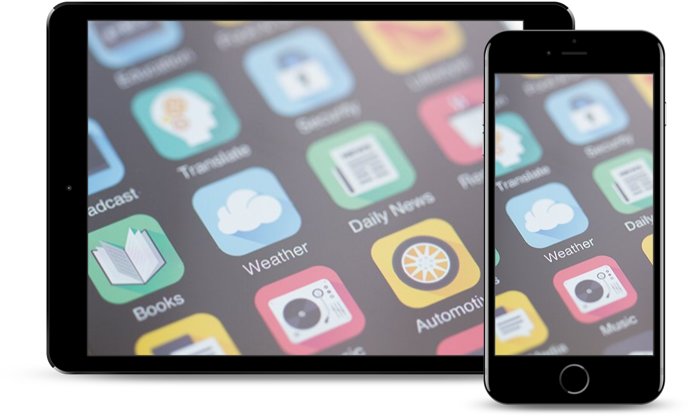

Stream over 45 million songs, ad-free. Or download albums and tracks to listen to offline. all the music in your personal yourTunes library - no matter where it came from - lives right alongside the Peach Music catalog. Start your free three-month trial with no commitment, and cancel anytime.
Start Your Trial NowPeach Music is available in yourTunes, and for iOS and Android devices.
